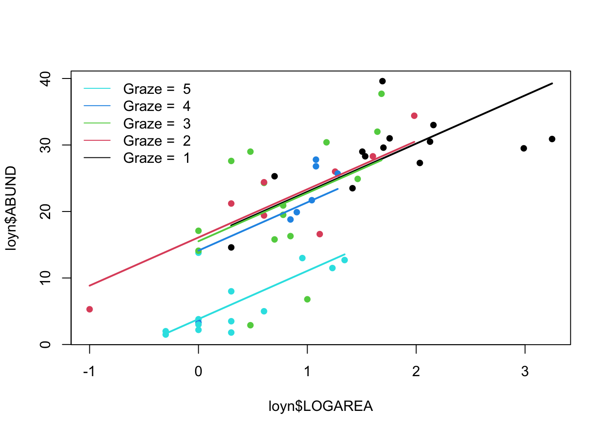

This exercise builds on the linear model with one continuous explanatory variable, and the linear model with one categorical explanatory variable, by adding these two sources of variation in the same model. The first part of the exercise will explore fitting an ‘additive’ model and the second part fitting a model with an interaction term.
1. As in previous exercises, either create a new R script (perhaps call it linear_model_3) or continue with your previous R script in your RStudio Project. Again, make sure you include any metadata you feel is appropriate (title, description of task, date of creation etc) and don’t forget to comment out your metadata with a # at the beginning of the line.
2. Import the data file ‘loyn.txt’ into R and take a look at the structure of this dataframe using the str() function. We know that the abundance of birds ABUND increases quickly with the area of the patch LOGAREA, and more slowly for the larger patches. We now also know that bird abundance changes in a non-linear way with the grazing intensity FGRAZE. But how do these effects combine together? Would a small patch with low grazing intensity have more birds than a larger patch with high grazing intensity? Could the poor fit of the ABUND ~ LOGAREA model for the large patches be improved if we accounted for grazing intensity in the patches?
3. As previously we want to treat AREA as a log-transformed area to limit the influence of the few disproportionately large patches, and GRAZE as a categorical variable with five levels. So the first thing we need to do is create the corresponding variables in the loyn dataframe, called LOGAREA and FGRAZE.
4. Explore the relationship between grazing and patch area, using a scatterplot. Hint: you may want to use GRAZE rather than FGRAZE for this. Is there any variability in patch area within each grazing level? Is the sampling design balanced, i.e., is the whole range of patch areas evenly represented at each grazing level?
5. You could explore the joint effect of FGRAZE and LOGAREA on ABUND, using panel plots. Hint: See the function coplot in the Data exploration lecture, and/or the help page for coplot. Factor levels increase from the bottom-left panel to the top-right panel. What pattern do you see? What do you expect your model results to look like?
6. Fit an appropriate linear model in R to explain the variation in the response variable, ABUND with the explanatory variables LOGAREA and FGRAZE acting additively. Hint: combine explanatory variables using a + symbol. Remember to use the data = argument. Assign this linear model to an appropriately named object, like birds.add.1.
7. Produce the ANOVA table using the anova() function on the model object. What null hypotheses are being tested? Hint: the anova() function performs sequential tests. Do you reject or fail to reject the null hypotheses?
8. Use the summary() function on the model object to produce the table of parameter estimates. Using this output take each line in turn and answer the following questions: (A) what does this parameter represent? (B) What is the biological interpretation of the corresponding estimate? (C) What is the null hypothesis associated with it? (D) Do you reject or fail to reject this hypothesis?
9. Now let’s check the assumptions of your linear model by creating plots of the residuals from the model. Remember, that you can split your plotting device into 2 rows and 2 columns using the par() function before you create the plots. Check each of the assumptions using these plots and report whether your model meets these assumptions.
10. Let’s plot the predictions of your initial model to figure out how it really fits the data. Here’s a recipe, using the predict() function. + plot the raw data, using a different colour per FGRAZE level + for each FGRAZE level in turn, + create a sequence of LOGAREA from the minimum value to the maximum within the grazing level (unless you wish to predict outside the range of observed values) + store it in a data frame (e.g. dat4pred) containing the variables FGRAZE and LOGAREA. Remember that FGRAZE is a factor, so it requires quotes. + add a predicted column containing the explanatory variables from the model for the new data frame, using predict() + plot the predictions with the appropriate colours
See the script below, for one of many ways of doing this.
par(mfrow= c(1, 1))
plot(loyn$ABUND ~ loyn$LOGAREA, col = loyn$GRAZE, pch = 16)
# Note: # colour 1 means black in R
# colour 2 means red in R
# colour 3 means green in R
# colour 4 means blue in R
# colour 5 means cyan in R
# FGRAZE1
# create a sequence of increasing Biomass within the observed range
LOGAREA.seq <- seq(from = min(loyn$LOGAREA[loyn$FGRAZE == 1]),
to = max(loyn$LOGAREA[loyn$FGRAZE == 1]),
length = 20)
# create data frame for prediction
dat4pred <- data.frame(FGRAZE= "1", LOGAREA = LOGAREA.seq)
# predict for new data
dat4pred$predicted <- predict(birds.add.1, newdata = dat4pred)
# add the predictions to the plot of the data
lines(predicted ~ LOGAREA, data = dat4pred, col = 1, lwd = 2)
# FGRAZE2
LOGAREA.seq <- seq(from = min(loyn$LOGAREA[loyn$FGRAZE == 2]),
to = max(loyn$LOGAREA[loyn$FGRAZE == 2]),
length = 20)
dat4pred <- data.frame(FGRAZE = "2", LOGAREA = LOGAREA.seq)
dat4pred$predicted <- predict(birds.add.1, newdata= dat4pred)
lines(predicted ~ LOGAREA, data = dat4pred, col = 2, lwd = 2)
# FGRAZE3
LOGAREA.seq <- seq(from = min(loyn$LOGAREA[loyn$FGRAZE == 3]),
to = max(loyn$LOGAREA[loyn$FGRAZE == 3]),
length = 20)
dat4pred <- data.frame(FGRAZE = "3", LOGAREA = LOGAREA.seq)
dat4pred$predicted <- predict(birds.add.1, newdata = dat4pred)
lines(predicted ~ LOGAREA, data = dat4pred, col = 3, lwd = 2)
# FGRAZE4
LOGAREA.seq <- seq(from = min(loyn$LOGAREA[loyn$FGRAZE == 4]),
to = max(loyn$LOGAREA[loyn$FGRAZE == 4]),
length = 20)
dat4pred <- data.frame(FGRAZE = "4", LOGAREA = LOGAREA.seq)
dat4pred$predicted <- predict(birds.add.1, newdata= dat4pred)
lines(predicted ~ LOGAREA, data = dat4pred, col = 4, lwd = 2)
# FGRAZE5
LOGAREA.seq <- seq(from = min(loyn$LOGAREA[loyn$FGRAZE == 5]),
to = max(loyn$LOGAREA[loyn$FGRAZE == 5]),
length = 20)
dat4pred <- data.frame(FGRAZE = "5", LOGAREA = LOGAREA.seq)
dat4pred$predicted <- predict(birds.add.1, newdata = dat4pred)
lines(predicted ~ LOGAREA, data = dat4pred, col = 5, lwd = 2)
legend("topleft",
legend= paste("Graze = ", 5:1),
col = c(5:1), bty = "n",
lty = c(1, 1, 1),
lwd = c(1, 1, 1))
[Optional] Alternative method:
# Okay, that was a long-winded way of doing this.
# If, like me, you prefer more compact code and less risks of errors,
# you can use a loop, to save repeating the sequence 5 times:
par(mfrow = c(1, 1))
plot(loyn$ABUND ~ loyn$LOGAREA, col = loyn$GRAZE, pch = 16)
for(g in levels(loyn$FGRAZE)){# `g` will take the values "1", "2",..., "5" in turn
LOGAREA.seq <- seq(from = min(loyn$LOGAREA[loyn$FGRAZE == g]),
to = max(loyn$LOGAREA[loyn$FGRAZE == g]),
length = 20)
dat4pred <- data.frame(FGRAZE= g, LOGAREA= LOGAREA.seq)
dat4pred$predicted <- predict(birds.add.1, newdata= dat4pred)
lines(predicted ~ LOGAREA, data = dat4pred, col = as.numeric(g), lwd = 2)
}
legend("topleft",
legend = paste("Graze = ", 5:1),
col = c(5:1), bty = "n",
lty = c(1, 1, 1),
lwd = c(1, 1, 1))
11. What have we learned from this analysis so far?
Let’s now explore this question left unanswered: “is it okay to assume the effect of LOGAREA to be the same for all grazing levels?” This is effectively asking if we should let the slope of LOGAREA vary across FGRAZE levels, which is the definition of an interactive effect.
12. Fit the corresponding linear model in R to explain the variation in the response variable, ABUND with the explanatory variables LOGAREA and FGRAZE and the interaction between these variables. Hint: this time, the interaction is included using the * symbol instead of +. Remember to use the data = argument. Assign this linear model to an appropriately named object, like birds.inter.1.
13. Produce the ANOVA table using the anova() function on the model object. What null hypotheses are being tested? Hint: the anova() function performs sequential tests. Which of these hypotheses are relevant to us? Do you reject or fail to reject the null hypotheses?
14. Use the summary() function on the model object to produce the table of parameter estimates. Using this output take each line in turn and answer the following questions: (A) what does this parameter represent, mathematically? (B) What is the biological interpretation of the corresponding estimate? (C) What is the null hypothesis associated with it? (D) Do you reject or fail to reject this hypothesis?
15. Now let’s check the assumptions of your linear model by creating plots of the residuals from the model. Remember, that you can split your plotting device into 2 rows and 2 columns using the par() function before you create the plots. Check each of the assumptions using these plots and report whether your model meets these assumptions.
16. Let’s now plot the predictions of the interactive model to figure out how it really fits the data. Hint: the script from question 11 should work all the same, since the predictor variables involved in the equation are the same. Don’t forget to update the name of the model!
17. Do you think the model is biologically plausible? Is it supported statistically?
End of the Linear model with continuous and categorical explanatory variables exercise